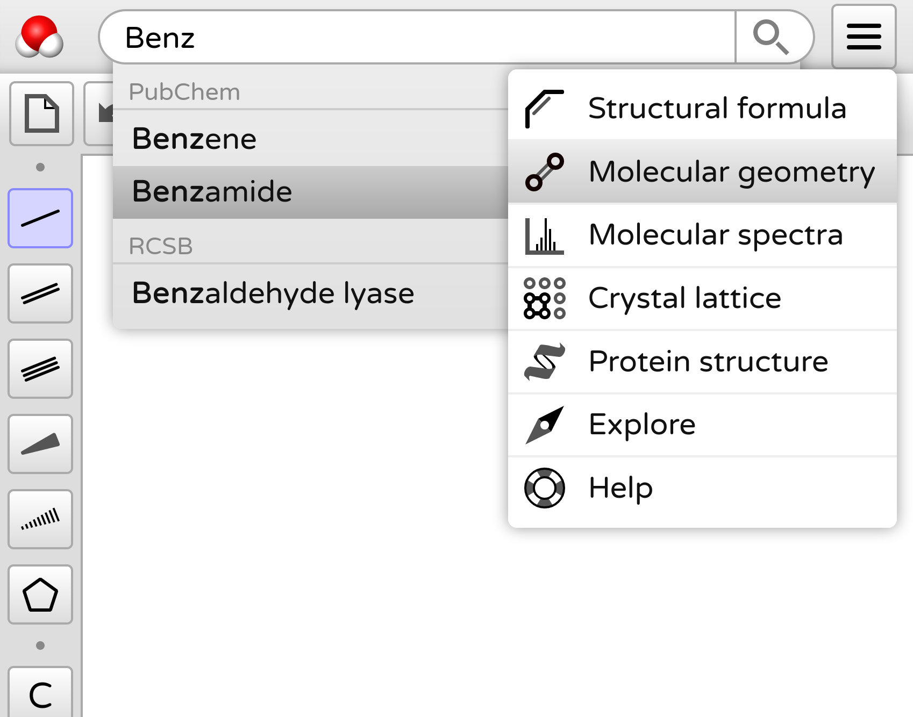
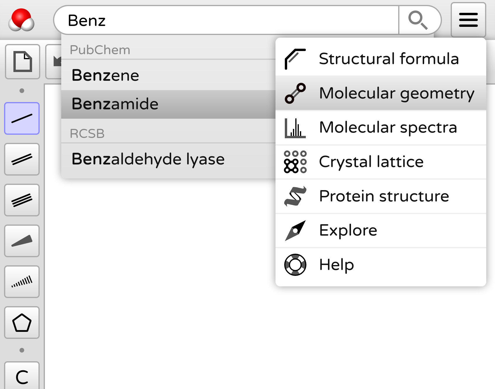
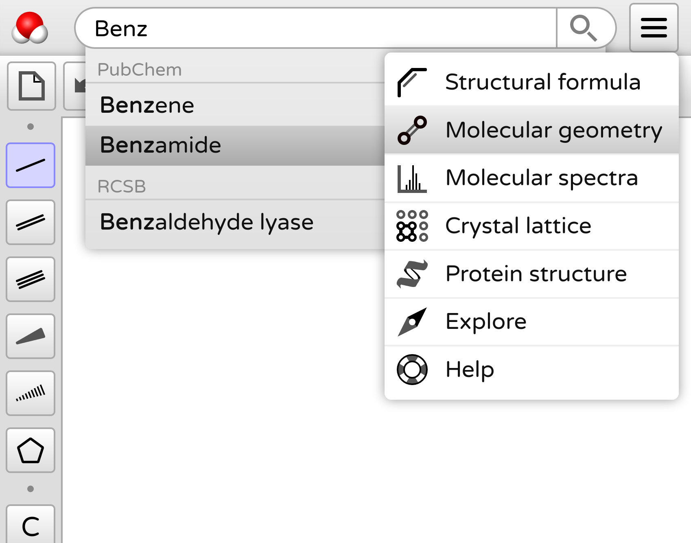

Welcome! This webpage contains information about my expertise and professional activity. I am specialized in solving difficult logical problems and implementing the solutions in software. Visual communication plays a key role in many of my projects, and I enjoy designing beautiful and innovative interfaces. I like brainstorming together with a team to find the path towards a good product, and to make technical descisions that are future-proof. I have an academic background in biophysics, pure mathematics, and theoretical computer science.
Technical skills
I have affinity with challenges across the software stack; both high-level and low-level. I like designing things, thinking about the interactions, and making sure everything is implemented in a modular and efficient way.
UI/UX Design

Familiar visual metaphors
Responsive layouts for every screen
Transparent and predictable behavior
Independent widget design
Interactive Graphics
Logic for complex user interaction
Modular architecture for event handling
Reusable and extensible utilities
Domain-specific abstractions
Accelerated Graphics
Fast 3D interaction and animation
Low-level knowledge about OpenGL
Acceleration using custom GLSL shaders
General Purpose GPU computation and parallelization
Machine Learning
Process large data archives
Research and apply existing solutions
Efficient workflow using Jupyter Notebooks
Formal Verification
One of my academic specializations is formal verification using interactive theorem provers. I primarily use the Coq Proof Assistant, using which I have developed various formal theories. Developing formal proofs is very challenging, and requires careful thinking about even the smallest logical inferences. Below are some formalization projects I did in my spare time.
Enable free online molecule editing and viewing using open cheminformatics databases and modern web technologies.
Academic background
In 2015 I started the Nanobiology Bachelor program at TU Delft. I was excited to learn about the molecular machinery and laws of physics that make life possible. While this fascination remains with me, I decided to move away from the empirical sciences to study mathematics and logic.
I moved to Nijmegen where they offer a strongly theoretical computer science track, including courses on Category Theory, Type Theory, Computability Theory, and Automated Reasoning. My interest in mathematics increased, and I followed courses about Axiomatic Set Theory, Model Theory, and Graph Theory.
During one full semeter we were introduced to Interaction Design for physical environments, and challenged to go through an iterative designing and prototyping procedure in small teams.
Contact details
I am always interested in new challenges and opportunities. For questions and business inquiries please send an email to post@hbergwerf.nl.

 
